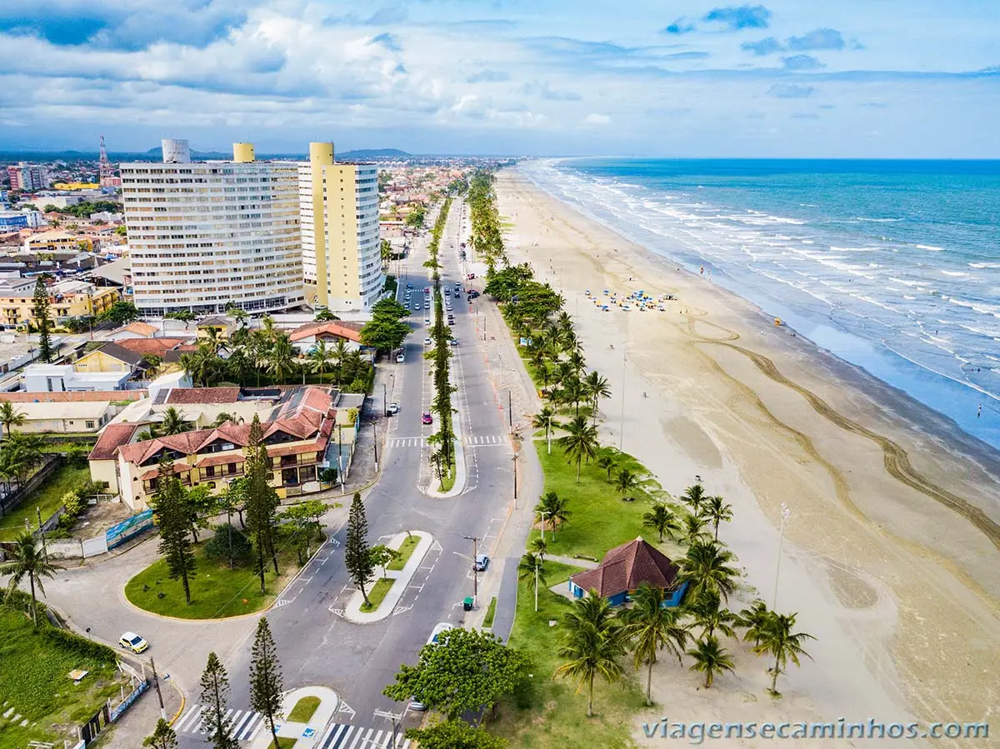
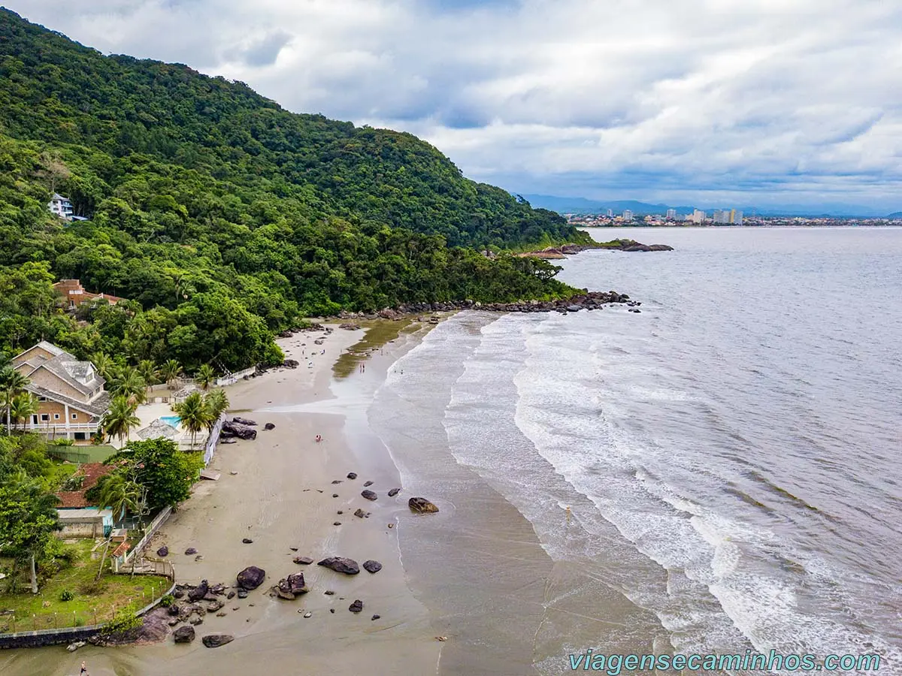

Peruíbe é uma cidade que se destaca por suas praias, paisagens naturais e riqueza histórica. Localizada no litoral sul paulista, reúne Mata Atlântica, cachoeiras, rios e construções históricas que revelam a cultura e as tradições da região. É um destino que combina turismo, aventura e preservação ambiental.
Conheça a história, a importância e as riquezas naturais e culturais que fazem Peruíbe única.
Peruíbe possui grande importância turística e ambiental para o litoral paulista. Suas praias, áreas de preservação e atrativos históricos movimentam o turismo regional. A cidade também se destaca por abrigar parte do patrimônio natural da Juréia-Itatins, importante área de conservação da Mata Atlântica.
Peruíbe está localizada no litoral sul do estado de São Paulo, na região da Baixada Santista, a aproximadamente 140 km da capital paulista. O município possui cerca de 32 km de praias e faz divisa com Itanhaém, Iguape, Itariri e Pedro de Toledo.
Peruíbe abriga as Ruínas do Abarebebê, um importante patrimônio histórico do século XVI; A cidade possui praias preservadas na região da Juréia-Itatins; Seu nome tem origem indígena e é associado à expressão "no rio dos tubarões".
A economia de Peruíbe é baseada principalmente no turismo, no comércio e na prestação de serviços. A cidade também possui atividades ligadas à agricultura familiar, à pesca e à construção civil, que contribuem para a geração de empregos e o desenvolvimento local.
Peruíbe oferece diversas atrações, como a Praia do Guaraú, o Aquário Municipal, as Ruínas do Abarebebê e a Feirinha Hippie. A cidade também possui cachoeiras, trilhas ecológicas, mirantes e praias que atraem visitantes interessados em lazer e contato com a natureza.
Peruíbe possui uma grande riqueza ambiental, com áreas de Mata Atlântica, manguezais, restingas, rios e praias. Parte de seu território está inserida no complexo de conservação da Juréia-Itatins, que abriga diversas espécies de animais e plantas e contribui para a preservação da biodiversidade.
Descubra alguns dos destinos que valem a visita em Peruíbe.
| Localização | Atração | Indicação | Nota dos visitantes |
|---|---|---|---|
| Guaraú | Praia do Guaraú | Natureza e lazer | 9,4/10 |
| Centro | Igreja de São João Batista | História e religião | 9,4/10 |
| Centro | Aquário de Peruíbe | Educação ambiental | 7,6/10 |
| Região do Guaraú | Marina Toshio | Passeios náuticos | 9,2/10 |
| Balneário Três Marias | Praia Balneário Três Marias | Praia e descanso | 9,2/10 |
| Centro | Feirinha Hippie de Peruíbe | Artesanato e cultura | 9,0/10 |
| Região rural | Rancho e Pesqueiro Arco-íris | Lazer e pesca | 8,8/10 |
| Balneário Flórida | Praia Flórida | Praia e tranquilidade | 9,0/10 |
| Ruínas do Abarebebê | Ruínas do Abarebebê | História e patrimônio | 8,6/10 |